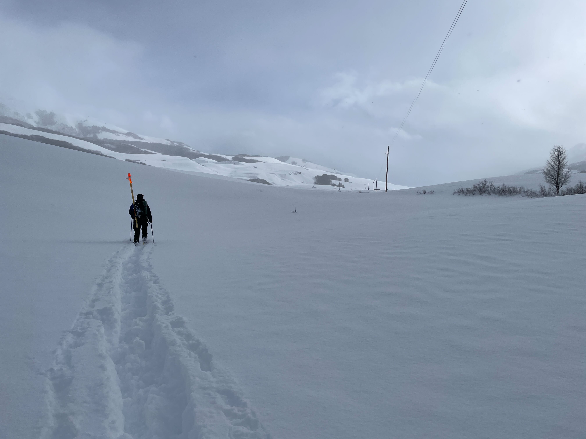

Lab News
The REU-Blinks Undergraduate Research Program Application is Open

January 2023: Calling all undergraduates interested in researching at the Friday Harbor Lab during the summer of 2023! Professor Lundquist will be conducting research on the conditions that lead to marine fog and needs two dedicated undergraduates to help deploy and analyze data from timelapse cameras, air temperature sensors, and air humidity sensors. These positions are available through the REU-Blinks Undergraduate Research Program; Professor Lundquist's research is labeled #7 on the linked webpage. Applications are open from January 2nd, 2023 through January 31st at 11:59 PM EST.
Eli and Danny Start Field Work at RMBL
January 2023: Eli and Danny just arrived at the Rocky Mountain Biological Laboratory (RMBL) in Crested Butte, Colorado. For the next few months, they will be collecting data on how snow sublimation impacts snowpack and water availability. Click here for more information on the project.
Professor Lundquist is Featured in the 2022 Mountain Views Chronicle
Last month, the 2022 volume of the Mountain Views Chronicle was published with the theme of “research in the extreme.” The Mountain Views Chronicle is an annual journal that showcases the technical and artistic works of researchers focused on mountain topics. In addition to Professor Lundquist’s article “An Extreme Number of Sensors in One Spot,” the 2022 volume contains a variety of insight research, poetry, and art. This 2022 Mountain Views Chronicle can be accessed at this link.